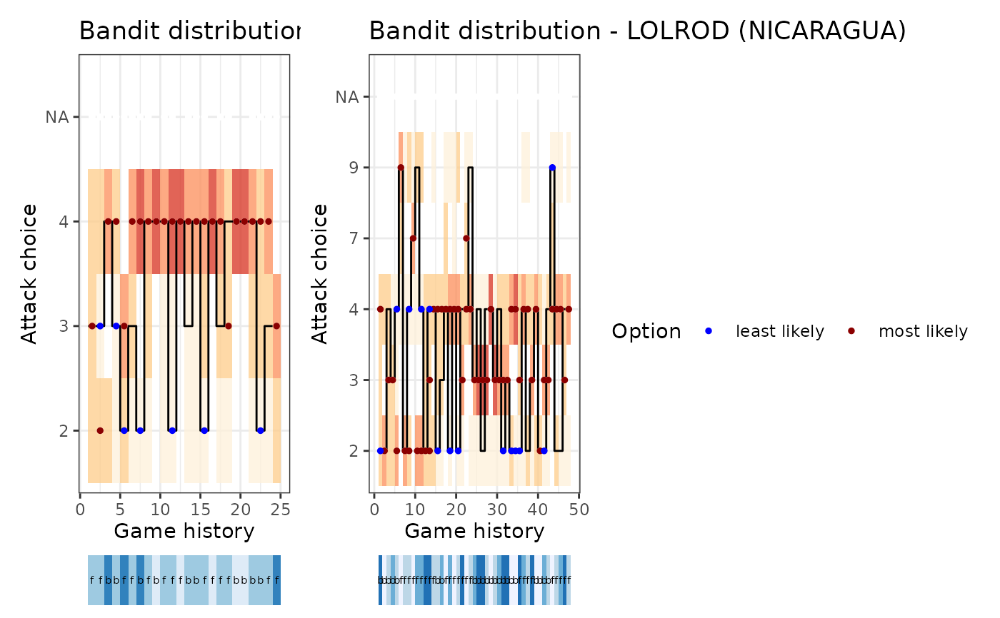

Plot a simulated setter distribution sequence
Source:R/setter_choice_functions.R
ov_plot_sequence_distribution.RdPlot a simulated setter distribution sequence
Usage
ov_plot_sequence_distribution(
ssd,
label_setters_by = "id",
font_size = 11,
title_wrap = NA,
split_set = FALSE,
output = "plot"
)Arguments
- ssd
simulated setter distribution output as returned by
ov_simulate_setter_distribution()- label_setters_by
string: either "id" or "name"
- font_size
numeric: font size
- title_wrap
numeric: if non-
NA, usestrwrap()to break the title into lines of this width- split_set
boolean: if
TRUE, separate the distribution sequence by set- output
string: either "plot" or "list"
Examples
dvw <- ovdata_example("190301_kats_beds")
ssd <- ov_simulate_setter_distribution(dvw = dvw, play_phase = c("Reception"),
n_sim = 100, attack_by = "zone",
setter_position_by = "front_back")
ov_plot_sequence_distribution(ssd)
#> Warning: Removed 89 rows containing missing values (`geom_point()`).
#> Warning: Removed 110 rows containing missing values (`geom_point()`).
